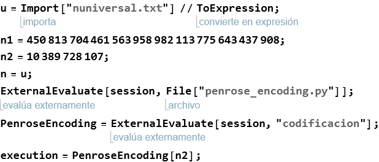
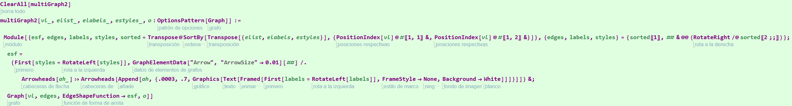
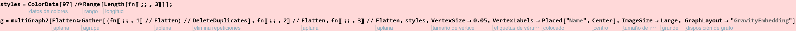
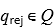

Penrose Encoding and graph visualization.
Diana Itzel Vázquez Santiago.
Emmanuel Isaac Juárez Caballero.
Jesús Eduardo Hermosilla Díaz.
Maestría en Inteligencia Artificial, generación 2021-2023
Initializing Cells
Execution of the python code for the penrose Encoding.

Pre-processing rules for the instructions that came from Penrose Encoding


Visualization using Multigraph2 with modified elements (originally taken from: https://mathematica.stackexchange.com/questions/201183/how-to-get-distinct-labels-on-parallel-edges-in-a-graph)
MultiGraph2 implementation: A tool to visualize correctly multilabel graphs on Wolfram Mathematica

Table generation for associations in the graph in order to be functional with multigraph2

Visualization of the graph using Gravity Embedding, a method to visualize more clearly the graph.

Image List for the first 12 Turing Machines
Visualization of first 12 TM

Pre processing of the data in order to compile this in the UTM program for python


Execution of the TM (Don’t execute this if the Machine has no halt, this would leead to an “infinite” execution)
In order to execute the decoder for the UTM we need to introduce a number to execute 



Formato posible para la visualización de las máquinas de Turing.